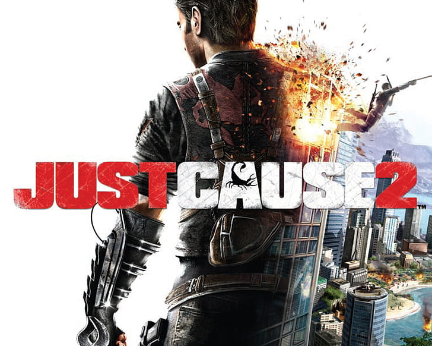
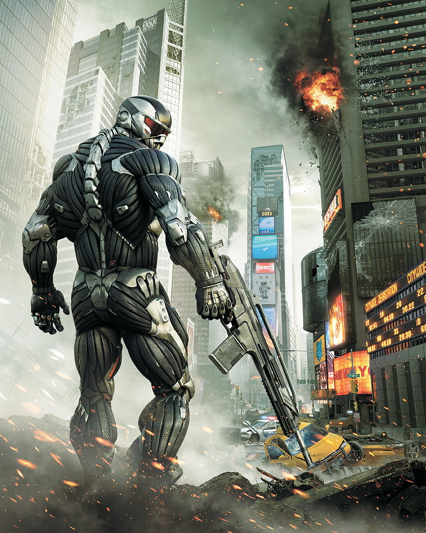
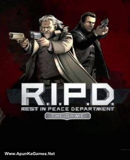

Battlefield 3 features the combined arms battles across single-player,
co-operative and multiplayer modes. It reintroduces several elements
absent from the Bad Company games, including fighter jets, the prone
position and 64-player battles on PC.
PC Requirements :
Required Processor: 2 GHz Dual Core (Core 2 Duo 2.4 GHz or Athlon X2 2.7
GHz)
Just Cause 2 is a third-person action-adventure game in which players
control Rico Rodriguez, field operative of the Agency, in an effort to
overthrow the island dictatorship of Panau: an open world for players to
explore.

PC Requirements :
Required Processor: Dual-Core CPU (Athlon 64 X2 4200/Pentium D @ 3 GHz)
Crysis is a first-person shooter video game series created by Crytek. The
series revolves around a group of military protagonists with "nanosuits",
technologically advanced suits of armor that give them enhanced physical
strength, speed, defense, and cloaking abilities. The protagonists face
off against hostile North Korean soldiers, heavily armed mercenaries, and
a race of technologically advanced aliens known as the Ceph, who arrived
on Earth millions of years ago and have recently been awakened. The series
consists of three main installments, a standalone spinoff of the first
game with a separate multiplayer title, and a compilation. A fourth game,
under the working title of Crysis 4, was announced by Crytek on January
26, 2022.

PC Requirements :
Required Processor: Intel Pentium 4 2.8 GHz (3.2 GHz for Vista), Intel
Core 2.0 GHz (2.2 GHz for Vista)
R.I.P.D. The Game is a third-person shooter that has players gunning down
monsters called "deadoes", in a horde mode with one other player
cooperatively across online matchmaking. There are seven maps for each of
the seven missions and a final boss at the end of each one.

PC Requirements :
Required Processor: Intel Core2 Duo or AMD Athlon 64 X2, 2GHz
Modern Warfare 2 (2009) is a masterpiece and you shouldn’t hesitate even a
second to play it. Regarded as one of the best in the Call of Duty series,
Modern Warfare 2 is an intense game with a gripping storyline. You will
love the characters, and their development, and feel a genuine loss when
they are killed. If you want a full military game experience with rescue
operations, defending base missions, or sniper stealth missions, then you
won’t regret playing this game. The only problem you will have with this
game is its short campaign. You can also play Black-Ops which has
standalone missions with friends, or multiplayer mode against other
players.
.jpg)